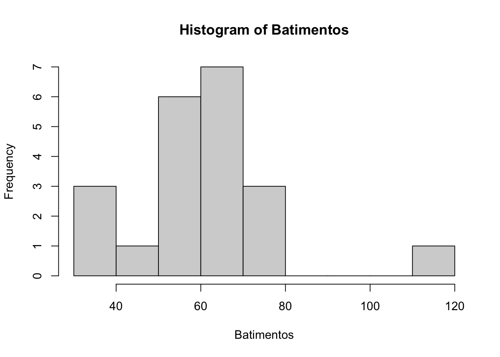
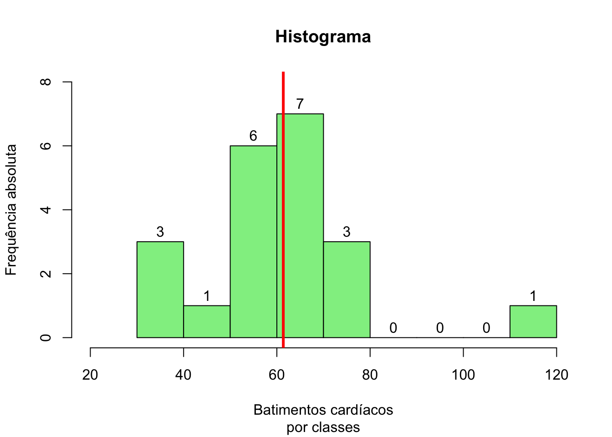
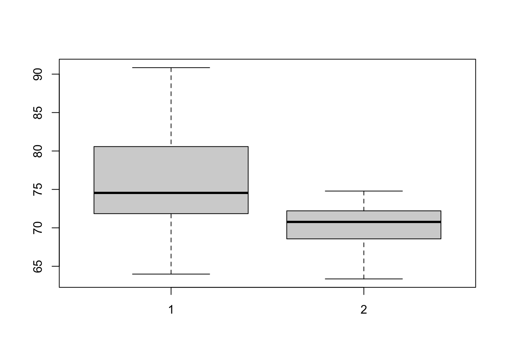
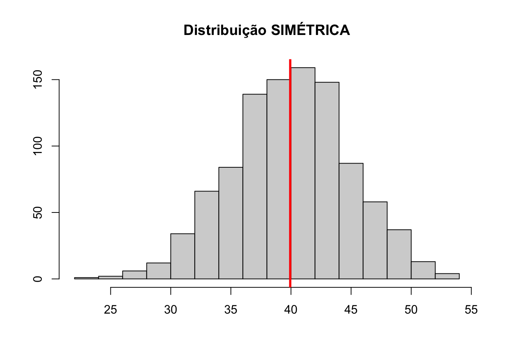
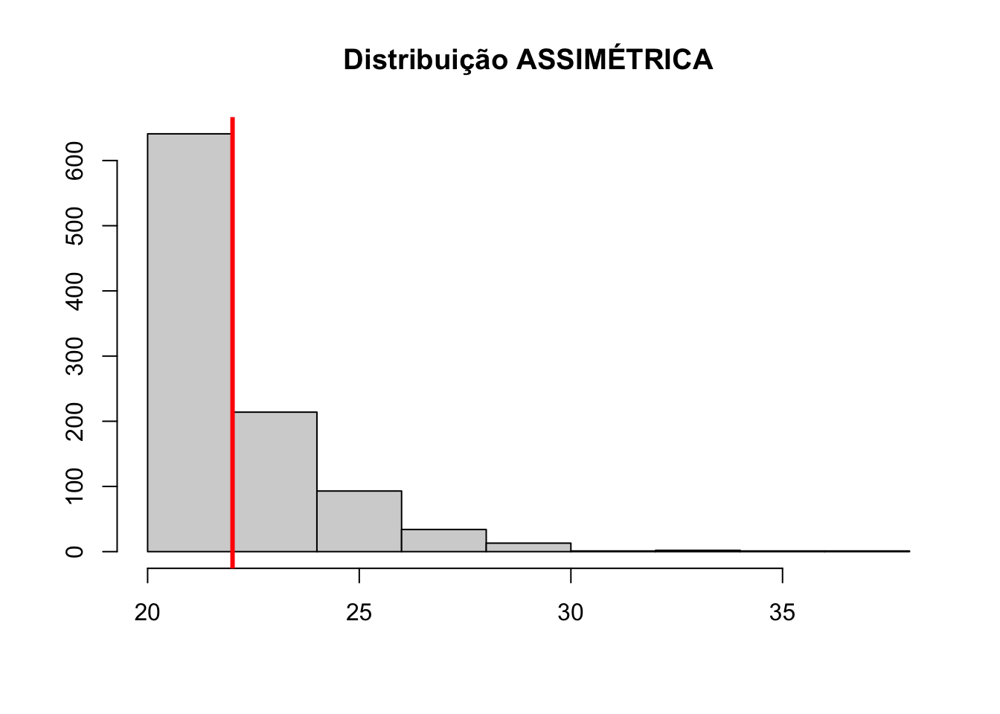
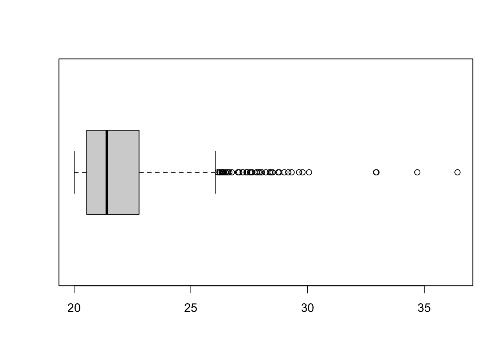

Capítulo 13 Gráficos
Nesse link https://r-graph-gallery.com/ está algumas possibilidades de gráficos que podemos fazer usando o R. Para fazer gráficos mais elaborados (aparentemente mais atrativos visualmente) usamos o pacote GGPlot2 https://ggplot2.tidyverse.org/.
Focaremos nossa atenção em dois gráficos específicos para variáveis quantitativas: Histograma e Boxplot, em nem faremos nada atrativo, usaremos o pacote básico do R que nos fornece as funções hist() e boxplot(), pois o nosso obtivo para esse momento é simplesmente estudar a importância desses gráficos.
O que a gente levaria um tempinho… é simplesmente assim em código R:
Batimentos <- c(62, 55, 56, 46, 75, 67, 62, 75, 60, 54, 69, 63, 39, 57, 40, 39, 64, 71, 61, 54, 120)
# Para fazer o Histograma de Batimentos
hist(Batimentos)
# Para fazer o Boxplot de Batimentos
boxplot(Batimentos)Na área de gráficos (Plots), abaixo do ambiente de memória, serão mostrados os gráficos:
Histograma

Boxplot

Observações
Os gráficos mostram a informação batimentos de duas formas diferentes, mas elas estão relacionadas!
Observe que eixo horizontal do histograma corresponde ao eixo vertical do boxplot
13.1 Histograma
O histograma é um gráfico que usado para variáveis quantitativas contínua.
O histograma pode nos dar uma noção do tipo de distribuição de probabibilidade que os dados seguem.
A ideia desse gráfico é agrupar os dados em classes (cada barra do histograma é uma classe) e no eixo vertical tem-se a contagem (frequência) de quantos valores foram alocados em cada classe.
Para fazer a leitura do histograma:
Identifique as classes no “eixo x”
Identifique quantos elementos tem em cada classe no “eixo y”
Acredito que nesse exemplo, é fácil verificar:
A segunda classe: 40 - 50 batimentos, que tem 1 elemento (verifique no objeto Batimentos)
A terceira classe: 50 - 60 batimentos, que tem 6 elementos
Então, a aplitude das classes é igual a 10. Logo, a primeira classe é de 30 - 40.
As classes 80 - 90; 90 - 100 e 100 - 110 não tiveram ocorrências!
A classe 110-120 possui 1 elemento, que é aquele valor discrepante em relação aos demais valores.
Se não for fácil identificar as classes (eixo x) você pode usar o comando abaixo:
Se não for fácil identificar as frequencias (eixo y) você pode usar o comando abaixo:
De fato, o que estamos lendo por meio do histograma é o que chamamos de tabela de frequência:
| Classe | Frequência |
|---|---|
| 30 - 40 | 3 |
| 40 - 50 | 1 |
| 50 - 60 | 6 |
| 60 - 70 | 7 |
| 70 - 80 | 3 |
| 80 - 90 | 0 |
| 90 - 100 | 0 |
| 100 - 110 | 0 |
| 110 - 120 | 1 |
| \(\sum n\) | 21 |
Por meio do histograma ou da tabela podemos concluir que a classe modal (moda) é a classe de 60 - 70 batimentos;
A frequência foi apresentada em termos absolutos mais pode ser transformada em frequência percentual.
Quando estamos aprendendo a fazer um histograma manualmente, primeiro construímos essa tabela de frenquência, e para construí-la é necessário calcular o número ótimo de classes, umas das regras mais usada é a Regra Sturges (essa é opção padrão do R).
Podemos usar o pacote básico R para melhorar a aparência desse gráfico.
hisBat <- hist(Batimentos,
main = "Histograma",
xlab = "Batimentos cardíacos",
sub = "por classes",
ylab = "Frequência absoluta",
xlim = c(20, 120),
ylim = c(0, 8),
col = "lightgreen")
text(hisBat$mids, hisBat$counts, labels=hisBat$counts, adj = c(0.5,-0.5))
# adicionar linha para indicar a média
abline(v = mean(Batimentos),
col = "red",
lwd = 3)
13.2 Boxplot
Boxplot ou diagrama de caixa, é um gráfico que mostra as medidas: menor valor, primeiro quartil, mediana, terceiro quartil e máximo valor.
- Valores discrepantes (outliers) são detectados pelo boxplot. Veja a figura:

Essa figura foi retirada do site da Prof. Fernanda https://fernandafperes.com.br/blog/interpretacao-boxplot/ (uma exelente referência para estudar estatística!)
Geralmente eles são representados na vertical, mas também é comum a representação na horizontal.
É uma forma de comparar dois grupos em relação a uma medida, por exemplo os batimentos cardiacos de grupo de homens e de mulheres
# Geração de amostras simuladas
set.seed(1)
BatimentosMulheres <- rnorm(30, 70, 3)
BatimentosHomens <- rnorm(30, 75, 8)
# Boxplot para os dois grupos Homens e Mulheres
boxplot(BatimentosHomens, BatimentosMulheres)
O boxplot também pode nos informar se uma distribuição de probabilidade é simétrica ou não. Analise os gráficos abaixo, veja a conexão entre histograma e boxplot.


## Min. 1st Qu. Median Mean 3rd Qu. Max.
## 20.00 20.54 21.40 22.01 22.78 36.42